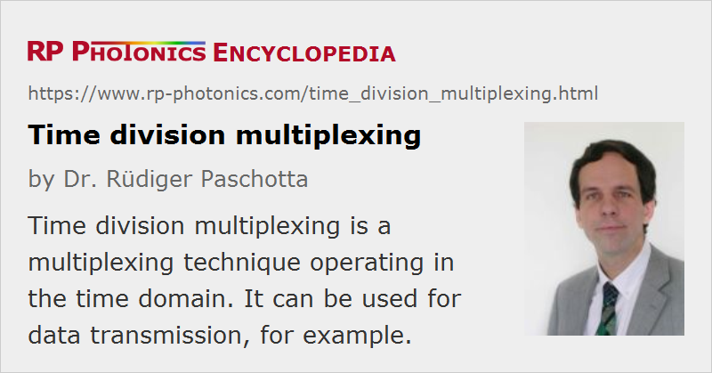

Time Division Multiplexing
Acronym: TDM, OTDM
Definition: a multiplexing technique operating in the time domain
More general term: optical multiplexing
Opposite term: wavelength division multiplexing
Categories: lightwave communications, methods
How to cite the article; suggest additional literature
Author: Dr. Rüdiger Paschotta
Time division multiplexing is a technique where several optical signals are combined, transmitted together, and separated again based on different arrival times. In an optical fiber communication system, interleaving pulse trains can carry different data channels in a single fiber [1, 3]. The use of multiple channels allows increased overall data transmission capacities without increasing the data rates of the single channels, or transmission of data of different users simultaneously. However, the time slot per bit must be reduced. Even if the bandwidth of the data modulator is limited, this can be done by using a train of ultrashort pulses (rather than a continuous optical wave) as the input of the modulator.
Special requirements of data transmitters for optical time division multiplexing are a short pulse duration and a low timing jitter. Also, the extinction ratio should be high, i.e. each combined channel should exhibit a very low power level between the bit slots, because such a background could otherwise interfere with other channels. For combining the signals, one typically requires some kind of optical delay lines.
An alternative to time division multiplexing is wavelength division multiplexing, where the channels are distinguished by wavelength rather than by arrival time.
In the context of distributed fiber-optic sensors [2], optical time division multiplexing means that signals are assigned to certain locations in the sensor via their arrival times. Such systems usually operate with ultrashort pulses.
Questions and Comments from Users
Here you can submit questions and comments. As far as they get accepted by the author, they will appear above this paragraph together with the author’s answer. The author will decide on acceptance based on certain criteria. Essentially, the issue must be of sufficiently broad interest.
Please do not enter personal data here; we would otherwise delete it soon. (See also our privacy declaration.) If you wish to receive personal feedback or consultancy from the author, please contact him e.g. via e-mail.
By submitting the information, you give your consent to the potential publication of your inputs on our website according to our rules. (If you later retract your consent, we will delete those inputs.) As your inputs are first reviewed by the author, they may be published with some delay.
Bibliography
| [1] | R. S. Tucker et al., “Optical time-division multiplexing for very high bit-rate transmission”, IEEE J. Lightwave Technol. 6 (11), 1737 (1988), doi:10.1109/50.9991 |
| [2] | A. D. Kersey et al., “Fiber grating sensors”, IEEE J. Lightwave Technol. 15 (8), 1442 (1997), doi:10.1109/50.618377 |
| [3] | H.-G. Weber et al., “Ultrahigh-speed OTDM-transmission technology”, J. Lightwave Technol. 24 (12), 4616 (2006), doi:10.1109/JLT.2006.885784 |
See also: wavelength division multiplexing, optical data transmission, optical fiber communications, fiber-optic sensors
and other articles in the categories lightwave communications, methods
|  |
If you like this page, please share the link with your friends and colleagues, e.g. via social media:
These sharing buttons are implemented in a privacy-friendly way!